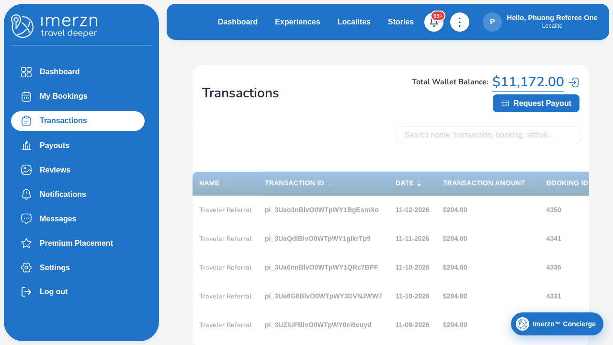
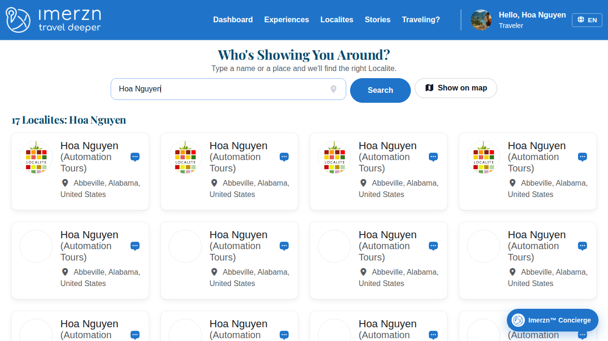

Playwright test failures
Passed: 20 | Failed: 3 | Flaky: 0 | Skipped: 0
Screenshots and errors only (passwords masked). The full report with traces is in the run's playwright-report artifact.
PRF-002 | Localite edits name, bio, and hosted experiences
localite/edit-profile.spec.ts · chromium
Error: Step "Edit name, bio, and experiences" failed: expect(locator).not.toHaveValue(expected) failed
Locator: getByRole('textbox', { name: 'First Name', exact: true })
Expected: not ""
Timeout: 10000ms
Error: element(s) not found
Call log:
- Expect "not toHaveValue" getByRole('textbox', { name: 'First Name', exact: true }) with timeout 10000ms
- waiting for getByRole('textbox', { name: 'First Name', exact: true })
at ../helpers/step.ts:17
15 | const message = error instanceof Error ? error.message : String(error);
16 | console.error(`[FAILED] ${title}: ${message}`);
> 17 | throw new Error(`Step "${title}" failed: ${message}`, { cause: error });
| ^
18 | }
19 | });
20 | }
at /home/runner/work/Imerzn-WebTest/Imerzn-WebTest/helpers/step.ts:17:13
at /home/runner/work/Imerzn-WebTest/Imerzn-WebTest/tests/localite/edit-profile.spec.ts:28:3
[cause]: Error: expect(locator).not.toHaveValue(expected) failed
Locator: getByRole('textbox', { name: 'First Name', exact: true })
Expected: not ""
Timeout: 10000ms
Error: element(s) not found
Call log:
- Expect "not toHaveValue" getByRole('textbox', { name: 'First Name', exact: true }) with timeout 10000ms
- waiting for getByRole('textbox', { name: 'First Name', exact: true })
at EditProfilePage.fillForm (/home/runner/work/Imerzn-WebTest/Imerzn-WebTest/pages/localite/edit-profile-page.ts:34:43)
at /home/runner/work/Imerzn-WebTest/Imerzn-WebTest/tests/localite/edit-profile.spec.ts:30:5
at /home/runner/work/Imerzn-WebTest/Imerzn-WebTest/helpers/step.ts:12:14
at /home/runner/work/Imerzn-WebTest/Imerzn-WebTest/tests/localite/edit-profile.spec.ts:28:3

REF-001 | Referral program: referrer earns Referral % of the commission and withdraws it
localite/referral-program.spec.ts · chromium
Error: Step "Referee: check a transaction in My Transactions" failed: No paid Ongoing booking can be completed yet (Ongoing: 4247, 4237, 4226, 4215, 4205, 4193, 4175, 4170, 4068, 4063; with Complete booking: 4247, 4237, 4226, 4215, 4205, 4193, 4175, 4170, 4068, 4063). "Complete booking" appears only after the booking's start time. The last steps of this test book and pay for "Experience For Referral" as Traveler Referral; wait until that booking starts, or book and pay an earlier slot once by hand.
at ../helpers/step.ts:17
15 | const message = error instanceof Error ? error.message : String(error);
16 | console.error(`[FAILED] ${title}: ${message}`);
> 17 | throw new Error(`Step "${title}" failed: ${message}`, { cause: error });
| ^
18 | }
19 | });
20 | }
at /home/runner/work/Imerzn-WebTest/Imerzn-WebTest/helpers/step.ts:17:13
at /home/runner/work/Imerzn-WebTest/Imerzn-WebTest/tests/localite/referral-program.spec.ts:76:3
[cause]: Error: No paid Ongoing booking can be completed yet (Ongoing: 4247, 4237, 4226, 4215, 4205, 4193, 4175, 4170, 4068, 4063; with Complete booking: 4247, 4237, 4226, 4215, 4205, 4193, 4175, 4170, 4068, 4063). "Complete booking" appears only after the booking's start time. The last steps of this test book and pay for "Experience For Referral" as Traveler Referral; wait until that booking starts, or book and pay an earlier slot once by hand.
at /home/runner/work/Imerzn-WebTest/Imerzn-WebTest/tests/localite/referral-program.spec.ts:92:13
at /home/runner/work/Imerzn-WebTest/Imerzn-WebTest/helpers/step.ts:12:14
at /home/runner/work/Imerzn-WebTest/Imerzn-WebTest/tests/localite/referral-program.spec.ts:76:3

SRCH-001 | Traveler finds the created localite by search
traveler/search-localite.spec.ts · chromium
Error: Step "Search for the localite" failed: expect(locator).toBeVisible() failed
Locator: getByRole('main').getByRole('link').filter({ has: getByRole('heading', { name: 'Hoa Nguyen', exact: true, level: 5 }) })
Expected: visible
Error: strict mode violation: getByRole('main').getByRole('link').filter({ has: getByRole('heading', { name: 'Hoa Nguyen', exact: true, level: 5 }) }) resolved to 4 elements:
1) <a href="/local-guides/hoa-nguyen-fms">…</a> aka getByRole('link', { name: 'Hoa Nguyen (Automation Tours)' }).first()
2) <a href="/local-guides/hoa-nguyen-aoh">…</a> aka getByRole('link', { name: 'Hoa Nguyen (Automation Tours)' }).nth(1)
3) <a href="/local-guides/hoa-nguyen-bqn">…</a> aka getByRole('link', { name: 'Hoa Nguyen (Automation Tours)' }).nth(2)
4) <a href="/local-guides/hoa-nguyen-olv">…</a> aka getByRole('link', { name: 'Hoa Nguyen (Automation Tours)' }).nth(3)
Call log:
- Expect "toBeVisible" getByRole('main').getByRole('link').filter({ has: getByRole('heading', { name: 'Hoa Nguyen', exact: true, level: 5 }) }) with timeout 30000ms
- waiting for getByRole('main').getByRole('link').filter({ has: getByRole('heading', { name: 'Hoa Nguyen', exact: true, level: 5 }) })
at ../helpers/step.ts:17
15 | const message = error instanceof Error ? error.message : String(error);
16 | console.error(`[FAILED] ${title}: ${message}`);
> 17 | throw new Error(`Step "${title}" failed: ${message}`, { cause: error });
| ^
18 | }
19 | });
20 | }
at /home/runner/work/Imerzn-WebTest/Imerzn-WebTest/helpers/step.ts:17:13
at /home/runner/work/Imerzn-WebTest/Imerzn-WebTest/tests/traveler/search-localite.spec.ts:23:3
[cause]: Error: expect(locator).toBeVisible() failed
Locator: getByRole('main').getByRole('link').filter({ has: getByRole('heading', { name: 'Hoa Nguyen', exact: true, level: 5 }) })
Expected: visible
Error: strict mode violation: getByRole('main').getByRole('link').filter({ has: getByRole('heading', { name: 'Hoa Nguyen', exact: true, level: 5 }) }) resolved to 4 elements:
1) <a href="/local-guides/hoa-nguyen-fms">…</a> aka getByRole('link', { name: 'Hoa Nguyen (Automation Tours)' }).first()
2) <a href="/local-guides/hoa-nguyen-aoh">…</a> aka getByRole('link', { name: 'Hoa Nguyen (Automation Tours)' }).nth(1)
3) <a href="/local-guides/hoa-nguyen-bqn">…</a> aka getByRole('link', { name: 'Hoa Nguyen (Automation Tours)' }).nth(2)
4) <a href="/local-guides/hoa-nguyen-olv">…</a> aka getByRole('link', { name: 'Hoa Nguyen (Automation Tours)' }).nth(3)
Call log:
- Expect "toBeVisible" getByRole('main').getByRole('link').filter({ has: getByRole('heading', { name: 'Hoa Nguyen', exact: true, level: 5 }) }) with timeout 30000ms
- waiting for getByRole('main').getByRole('link').filter({ has: getByRole('heading', { name: 'Hoa Nguyen', exact: true, level: 5 }) })
at LocalitesPage.verifyLocaliteDisplayed (/home/runner/work/Imerzn-WebTest/Imerzn-WebTest/pa
